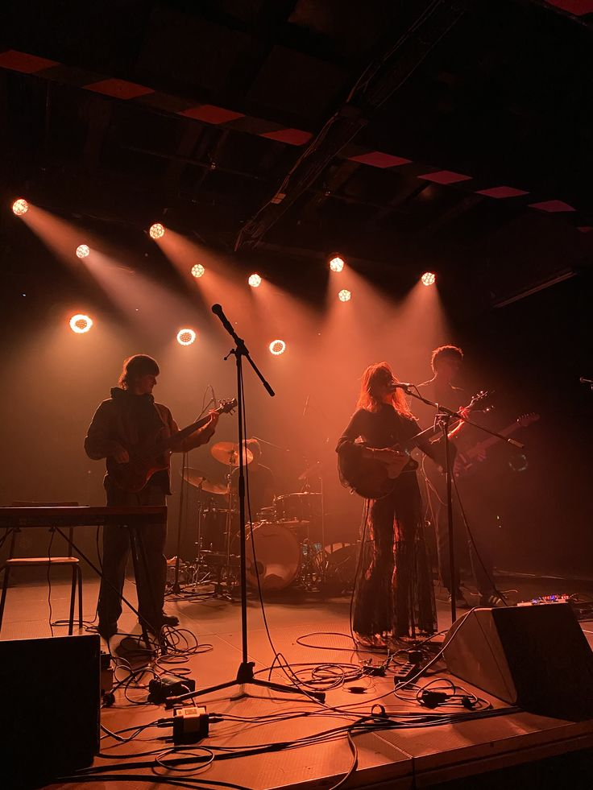
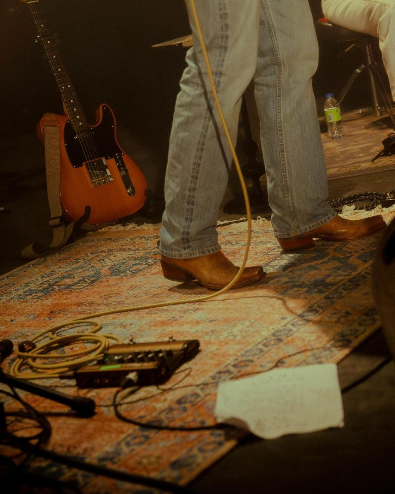
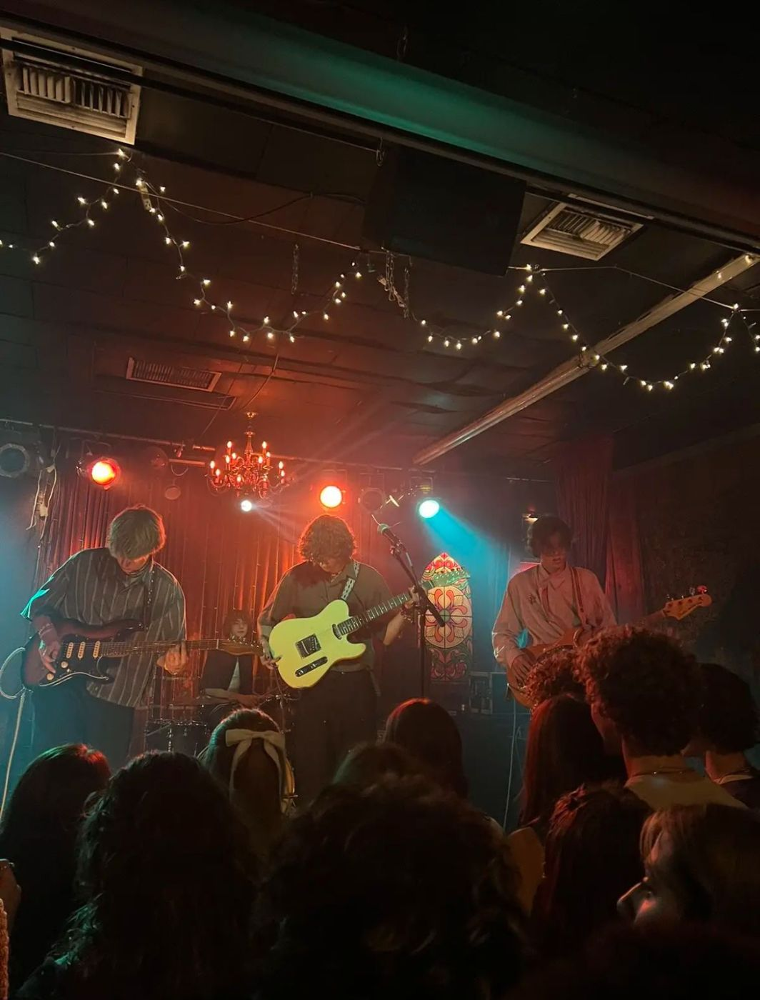
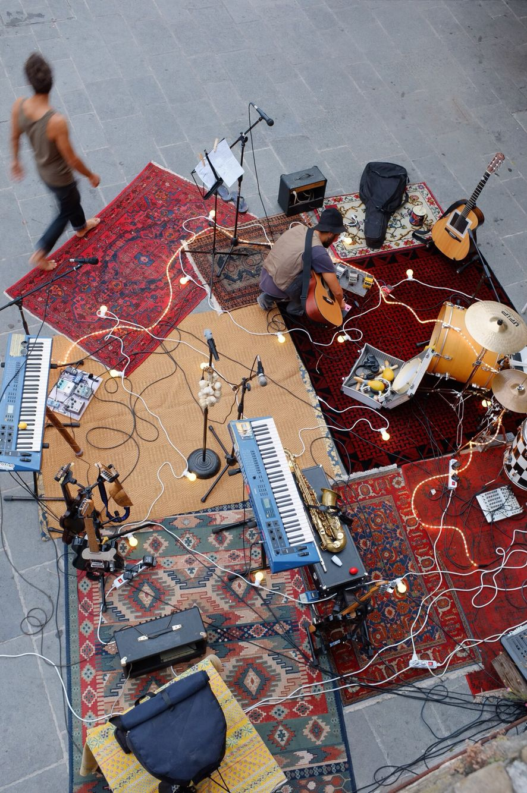
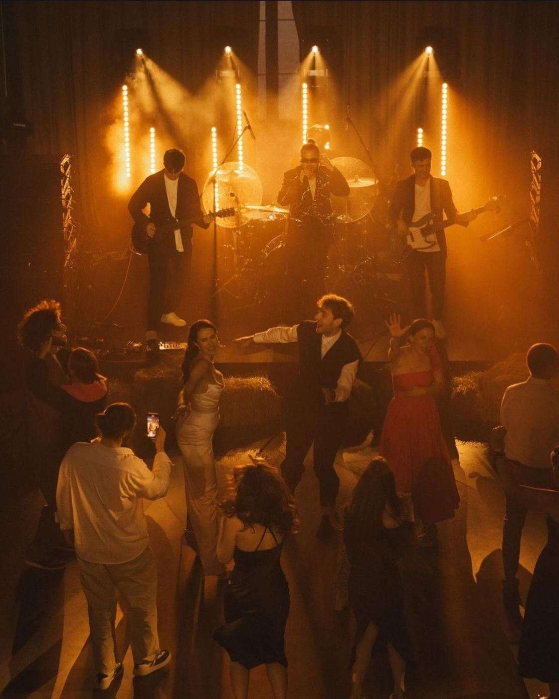

전구 여섯 개로 무대를 만드는 밴드

December 12, 2025
intervieweeLAMP HOUSE
전구 여섯 개로 무대를 만드는 밴드
질문 밴드 이름이 무대 조명에서 왔다고 들었습니다.
답 첫 공연 때 조명 장비를 빌릴 돈이 없어서 집에 있던 스탠드 여섯 개를 들고 갔습니다. 반응이 좋아서 지금도 그대로 씁니다.

질문 멤버 구성은 어떻게 됩니까?
답 보컬, 기타, 베이스, 드럼 네 명입니다. 곡은 기타가 뼈대를 만들고 나머지가 한 번씩 고칩니다.
질문 이번 공연은 신곡 세 곡을 처음 연주한 자리였습니다.
답 녹음 전에 관객 앞에서 먼저 연주해 보는 것이 저희 방식입니다. 반응을 보고 한 곡은 템포를 10 낮췄습니다.

질문 기록 영상을 보고 달라진 점이 있습니까?
답 드러머가 생각보다 자주 웃고 있었습니다. 그 뒤로는 드럼 쪽 전구를 하나 더 밝게 둡니다.
질문 스탠드 여섯 개는 어떻게 배치합니까?
답 무대 앞에 세 개, 뒤에 세 개를 둡니다. 곡이 바뀔 때마다 멤버가 직접 하나씩 켜고 끕니다. 조명 담당이 따로 없어서 생긴 방식입니다.

질문 합주는 어디서 합니까?
답 망원동 지하 합주실을 5년째 빌려 씁니다. 벽에 붙인 흡음재가 다 떨어져서 소리가 조금 울리는데, 그 울림에 익숙해졌습니다.
질문 관객에게 바라는 것이 있습니까?
답 공연 중에는 휴대폰을 잠깐 내려놓아 주셨으면 합니다. 대신 공연이 끝나면 무대 사진을 찍을 수 있도록 10분 동안 조명을 켜 둡니다.

질문 다음 공연은 언제입니까?
답 봄에 소극장 투어를 합니다. 여섯 도시를 돌고, 도시마다 스탠드를 하나씩 현지에서 빌리기로 했습니다.